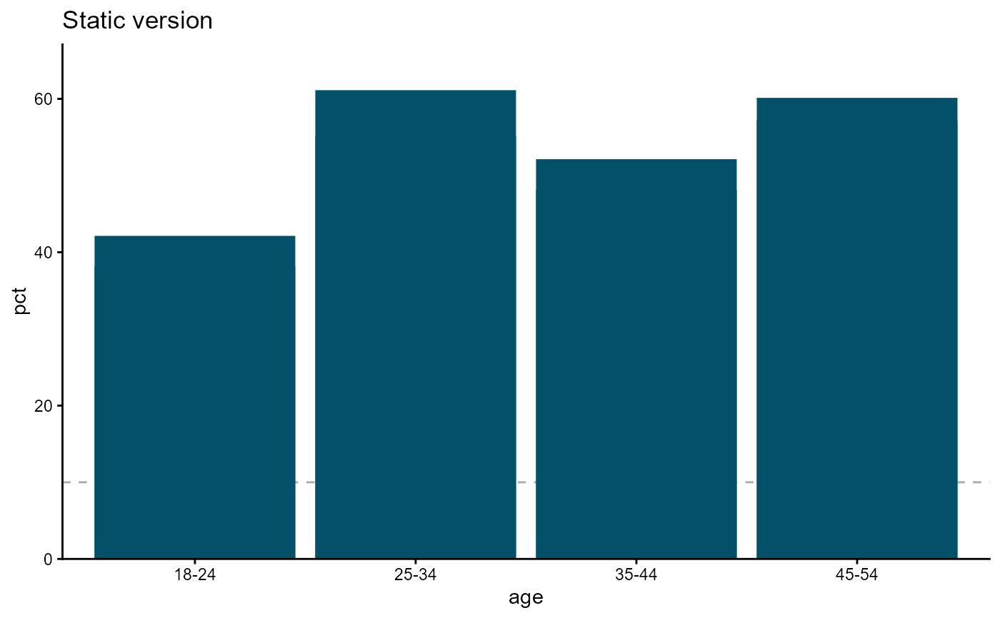

Creates an hd object that accumulates geometry and presentation layers
via +, then renders when printed. This mirrors the way ggplot2 builds
plots: data mapping is declared first; visual decisions are added
incrementally; nothing is rendered until the object hits the console (or an
explicit print() / knit call).
Usage
hd(
data,
x = NULL,
y = NULL,
group = NULL,
n = NULL,
colour = NULL,
backend = getOption("highdir.backend", "highcharter")
)Arguments
- data
A
data.frameor anhd_spec()object. When anhd_specis supplied every other mapping argument (x,y, …) is ignored — the spec carries them already.- x
Character. Column name for the x-axis variable. Ignored when
datais anhd_spec.- y
Character. Column name for the y-axis variable. Ignored when
datais anhd_spec.- group
Character or
NULL. Column used to split data into multiple series. Ignored whendatais anhd_spec.- n
Character or
NULL. Column of raw counts shown in highcharter tooltips alongside the y value. Ignored whendatais anhd_spec.- colour
Character or
NULL. ggplot2 colour aesthetic column. Defaults togroupwhenNULLandgroupis set. Ignored whendatais anhd_spec.- backend
Character. Rendering engine —
"highcharter"(default, interactive) or"ggplot2"(static), or any engine added withregister_backend(). Falls back togetOption("highdir.backend", "highcharter").
Details
hd() accepts either raw data columns or an existing hd_spec() object.
Passing an hd_spec is the recommended bridge for code that already
constructs specs separately (e.g. in Shiny or a reporting pipeline).
Examples
df <- data.frame(
age = rep(c("18-24", "25-34", "35-44", "45-54"), each = 2),
sex = rep(c("Male", "Female"), 4),
pct = c(42, 38, 55, 61, 48, 52, 60, 57),
n = c(120, 115, 200, 210, 180, 175, 160, 155)
)
# Composable style
hd(df, x = "age", y = "pct", group = "sex") +
hd_geom_column() +
hd_opts(title = "Health survey", ylim = c(0, 80))
#> Registered S3 method overwritten by 'quantmod':
#> method from
#> as.zoo.data.frame zoo
# Pass an existing hd_spec
spec <- hd_spec(df, x = "age", y = "pct", group = "sex", n = "n")
hd(spec) +
hd_geom_line(smooth = TRUE) +
hd_opts(title = "Trend")
# Switch backend per figure
hd(df, x = "age", y = "pct", backend = "ggplot2") +
hd_geom_column() +
hd_opts(title = "Static version")
